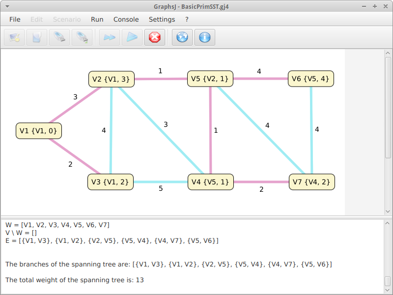
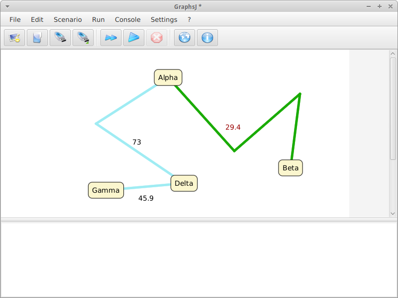
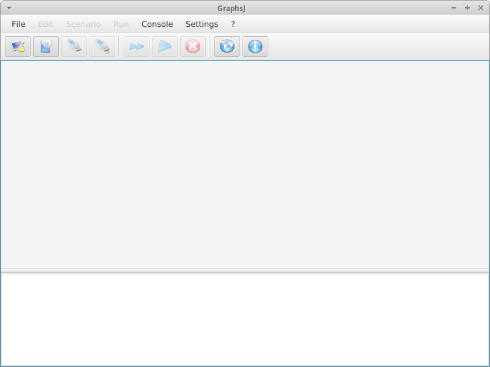
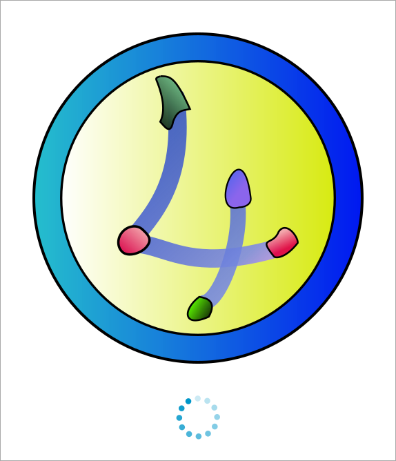
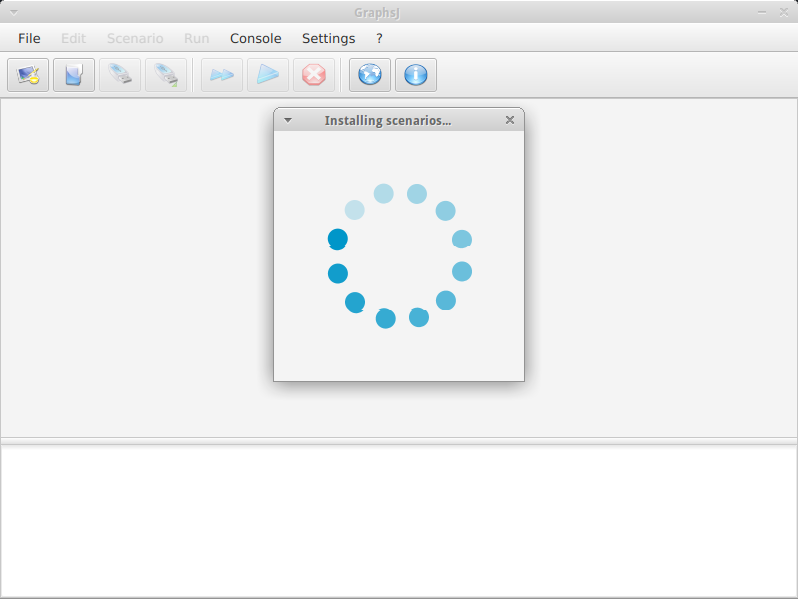

GraphsJ
ScalaFX didactic application for running graph algorithms
Introduction

GraphsJ is a modern didactic application dedicated to interactively executing graph algorithms; it features both a visual user interface and a Scenario Development Kit - to create custom scenarios based on the EighthBridge toolkit for ScalaFX.
Students of Operations Research need to easily run graph algorithms, in order to study them with a practical, step-by-step approach: GraphsJ can meet this requirement for well-known algorithms - such as Prim's Shortest Spanning Tree - which often prove to be cross-subject.
On the other hand, researchers may want to test their algorithms on a PC, as it's faster and less error-prone, especially as the number of tests increases; unfortunately, writing a whole computer program only to test an algorithm is not always at hand - just the creation a GUI is a rather complex, time-consuming task.
GraphsJ satisfies both user groups, providing an easy-to-use interface as well as a minimalist Scala framework: people can therefore focus on the business logic making up their algorithms.
This new version, GraphsJ 4, is a ScalaFX-oriented redesign of the original architecture, introducing several concepts from Functional Programming; adding and removing scenarios is also extremely simplified: JAR files copied into a dedicated per-user directory will automatically and immediately provide new scenarios.
Finally, when no scenarios are installed, GraphsJ can automatically download the latest version of its scenarios pack directly from GitHub! ^__^
Features
Modern user interface, employing ScalaFX
Flexible and vastly enhanced canvas to draw and edit graphs
ScalaFX-based SDK, enabling anyone to easily create new scenarios
Scenario-discovery engine, automatically adding and removing scenarios
Automated installation of the predefined scenarios, retrieved from GraphsJ-scenarios
Simplified model, inspired by Functional Programming
Per-scenario options dialog and help, customizable by scenario developers
XML-based document files, to foster interoperability and compatibility with previous versions
Open source code available: developers can create a new scenario starting from a consolidated base
Requirements
Java 8u65 or later is recommended.
Running GraphsJ
The suggested way to run GraphsJ is MoonDeploy, as it will automatically download and launch the application - just click "Run with MoonDeploy".
Otherwise, to start the application: 1. Download and decompress the binary zip archive 2. Run the file bin/GraphsJ (on UNIX) or bin/GraphsJ.bat (on Windows)
Online help
GraphsJ features a very user-friendly interface, but ideas and suggestions can be found in the wiki!
Scenario development kit
For detailed information, please refer to the SDK project page.
Screenshots




Special thanks
The icons in the menu and toolbar are part of the Crystal Clear icon set, by Everaldo Coelho.
Special thanks to:
for their suggestions.